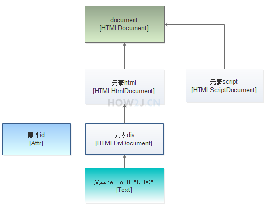

Firekaka
Welcome to SamsarA’s Blog! If you get any problems when reading my blog, you can
ask me on Gitee.
Firekaka
#HTML #CSS #Parse #Dom #Enum- Let’s build a browser engine!
You can get source code on my Gitee.
DOM
DOM 是Document Object Model( 文档对象模型 )的缩写，是把html里面 的各种数据当作对象进行操作的一种思路。当创建好一个页面并加载到浏览器时，
DOM就悄然而生，它会把网页文档转换为一个文档对象，主要功能是处理网页内容。 在这个文档对象里，所有的元素呈现出一种层次结构.
DOM把所有的html都转换为节点
- 整个html是一个节点
- 元素(div,span)是节点
- 元素属性(class,id)是节点
- 元素内容是节点
- 注释也是节点

浏览器绘制html的过程
解析HTML为DomNode
1 | |
解析CSS为Stylesheet
1 | |
由DomNode和Stylesheet生成StyleNode
1 | |
由StyleNode生成LayoutBox布局树
1 | |
根据布局树绘制html页面
1 | |
Enum
枚举的定义
- 枚举类型一种特殊的数据类型，它既是一种类(class)类型却又比类类型多了些特殊的约束。
在没有枚举类型时定义常量常见的方式如下：
1 | |
上述的常量定义常量的方式称为int枚举模式，这样的定义方式并没有什么错，
但它存在许多不足，如在类型安全和使用方便性上并没有多少好处，
如果存在定义int值相同的变量，混淆的几率还是很大的，
编译器也不会提出任何警告，因此这种方式在枚举出现后并不提倡，
现在我们利用枚举类型来重新定义上述的常量：
1 | |
在定义枚举类型时我们使用的关键字是enum，与class关键字类似，
只不过前者是定义枚举类型，后者是定义类类型。值一般是大写的字母，多个值之间以逗号分隔。
同时我们应该知道的是枚举类型可以像类(class)类型一样，定义为一个单独的文件，当然也可以定义在其他类内部，
更重要的是枚举常量在类型安全性和便捷性都很有保证，如果出现类型问题编译器也会提示我们改进，
但务必记住枚举表示的类型其取值是必须有限的，也就是说每个值都是可以枚举出来的。
枚举实现原理
Java Enum类型的语法结构尽管和java类的语法不一样，应该说差别比较大。 但是经过编译器编译之后产生的是一个class文件。 该class文件经过反编译可以看到实际上是生成了一个类， 该类继承了java.lang.Enum
而且枚举类是一个不可以被继承的final类。其枚举值(BlockNode,InlineNode…)都是Type类型的类静态常量，因此枚举类中的枚举值最好全部大写。
我们可以通过下面的方式来得到Type枚举类的一个实例：
1 | |
经过反编译(javap Type命令)之后得到的内容大致如下:
1 | |
即然枚举类是class，当然在枚举类型中有构造器，方法和数据域。但是，枚举类的构造器有很大的不同：
- (1) 构造器只是在构造枚举值的时候被调用。
- (2) 构造器只能私有private，绝对不允许有public构造器。 这样可以保证外部代码无法新构造枚举类的实例。
Enum抽象类常见方法
Enum是所有 Java 语言枚举类型的公共基本类（注意Enum是抽象类），以下是它的常见方法：
- ordinal()方法: 返回枚举值在枚举类种的顺序。这个顺序根据枚举值声明的顺序而定。
1
2
3//返回类型：int
Type.BlockNode.ordinal(); //返回结果：0
Type.InlineNode.ordinal(); //返回结果：1 - compareTo()方法: Enum实现了java.lang.Comparable接口，因此可以比较象与指定对象的顺序。Enum中的compareTo返回的是两个枚举值的顺序之差。当然，前提是两个枚举值必须属于同一个枚举类，否则会抛出ClassCastException()异常。(具体可见源代码)
1
2//返回类型：int
Type.BlockNode.compareTo(Type.InlineNode); //返回结果 -1 - values()方法： 静态方法，返回一个包含全部枚举值的数组。
1
2
3
4Type[] Types=Type.values();
for(Type c:Types){
System.out.print(c+",");
}//返回结果：BlockNode,InlineNode,AnonymousBlock,None - toString()方法： 返回枚举常量的名称。
1
2
3//返回类型：String
Type type=Type.BlockNode;
System.out.println(type);//返回结果: BlockNode - valueOf()方法： 这个方法和toString方法是相对应的，返回带指定名称的指定枚举类型的枚举常量。
1
2
3//返回类型：static<T extends Enum<T>> T
Type.valueOf("block");
//返回结果: Type.BlockNode - equals()方法： 比较两个枚举类对象的引用。
1
2//返回类型： boolean
Type.BlockNode.equals(Type.InlineNode) //返回结果: false - getDeclaringClass()方法： 返回与此枚举常量的枚举类型相对应的 Class 对象
- name()方法： 返回此枚举常量的名称，在其枚举声明中对其进行声明
源码分析
Enum类内部会有一个构造函数，该构造函数只能有编译器调用，我们是无法手动操作的，不妨看看Enum类的主要源码：
1 | |
通过Enum源码，可以知道，Enum实现了Comparable接口，这也是可以使用compareTo比较的原因，当然Enum构造函数也是存在的，该函数只能由编译器调用，我们只能使用enum关键字定义枚举.
主要用法
- 1.常量
- 2.switch
1
2
3
4
5
6
7
8
9
10
11
12
13
14switch (boxType.type) {
case InlineNode:
...
break;
case AnonymousBlock:
...
break;
case BlockNode:
...
break;
case None:
...
break;
} - 3.向枚举中添加新方法
如果打算在enum类中定义方法，务必在声明完枚举实例后使用分号分开，倘若在枚举实例前定义任何方法，编译器都将会报错，无法编译通过，同时即使自定义了构造函数且enum的定义结束，
我们也永远无法手动调用构造函数创建枚举实例，毕竟这事只能由编译器执行。1
2
3
4
5
6
7
8
9
10
11
12
13
14
15
16
17
18public enum Type {
//添加方法枚举时要用分号结束
BlockNode("block",1), InlineNode("inline",2), AnonymousBlock("anonymous",3), None("none",4);
//成员变量
private final String type;
private final int i;
//构造方法
private Type(String type,int i) {
this.type = type;
this.i = i;
}
//定义方法
public String getType() {
return type;
}
} - 4.覆盖枚举方法
父类Enum中的定义的方法只有toString方法没有使用final修饰，因此只能覆盖toString方法1
2
3
4
5
6
7
8
9public enum Type {
...
...
// 覆盖方法
@Override
public String toString() {
return this.index + "_" + this.name;
}
} - 5.实现接口
所有的枚举都继承自java.lang.Enum类。由于Java 不支持多继承，所以枚举对象不能再继承其他类。1
2
3
4
5
6
7
8
9
10
11
12
13
14
15public interface interface_ {
void print();
String getInfo();
}
public enum Type implements interface_{
...
...
// 接口方法
@Override
public String getInfo() {
return this.name;
}
} - 6.使用接口组织枚举
1
2
3
4
5
6
7
8
9public interface Food {
enum Coffee implements Food {
BLACK_COFFEE, DECAF_COFFEE, LATTE, CAPPUCCINO
}
enum Dessert implements Food {
FRUIT, CAKE, GELATO
}
} - 7.关于枚举集合的使用
java.util.EnumSet和java.util.EnumMap是两个枚举集合。EnumSet保证集合中的元素不重复;EnumMap中的 key是enum类型，而value则可以是任意类型。